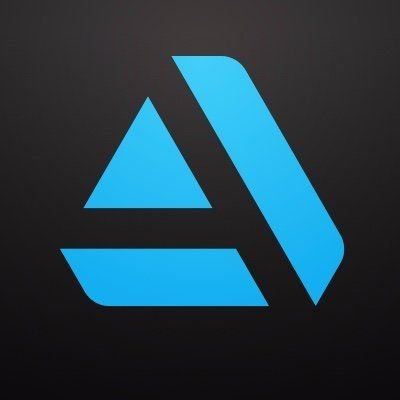

Freelance
Creative
Mon parcours, mes outils, ma liberté

Bande démo
Pourquoi j'ai changé ?
"Je suis passé de Micro-entreprise à SARL car mon CA dépassait les plafonds et je voulais optimiser mes charges."
03. Démarchage : La Jungle
Habitudes de Fer
- Relance régulière
- Post LinkedIn régulier
- Veille stratégique (Malt, 3dvf...)
Le Réflexe Gagnant
Ne pas vendre un service,
vendre une solution à un problème.
04. Le Prix de ta liberté
Comment fixer son TJM ?
[300 - 500]€
Selon l'expérience, la niche et l'urgence.
Règle d'or : TJM = (Salaire net visé x 2) / 18 jours travaillés
05. Le Réseau
Ton réseau est ton assurance chômage.
- Participer à des meetups
- Aider les autres sans attendre
- Garder contact avec les anciens collègues
Contre la solitude 🧘
1. Coworking (au moins 1j/semaine)
2. Bureaux partagés avec d'autres créatifs
3. Sport ou activités hors écran à 18h pile !
06. Vitrine Digitale
Où se montrer ?
 ArtStation Artistes
LinkedIn Professionnel
Site Perso Le Top
À éviter ❌
- mettre des projets inachevés
- un profil pas clair
- des photos non pros
- laisser ses premiers projets
- travailler gratuitement
- ne pas faire signer ses devis
07. Se faire connaître
La règle des 3C :
Contenu
Constance
Confiance
Liens Utiles
Prêt à décoller ?
Merci de votre attention !
Questions ? ✨